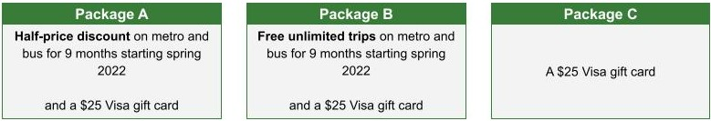

Low-Income Fare Trial (LIFT)
Frequently Asked Questions
Sections
Overview
Eligibility
Signing up
Transit discount
Data protection
Contact
Overview
What is the Low-Income Fare Trial (LIFT)?
The Low-Income Fare Trial (LIFT) is a pilot program offering discounts on metro and bus. Through a lottery, we–DC Government–will give up to 2,000 residents half-price discounts or free unlimited trips for nine months. If you’re eligible and you apply , you’ll get one of the following:

Why is DC Government offering the discounts by lottery?
There are more eligible individuals than we have funding for in the pilot, and a lottery gives everyone a fair chance of getting a discount. We’ll also be able to use this lottery to inform a study, called a randomized evaluation, that will help us see if LIFT actually impacts the way residents get around and their employment, income, family, health, and energy use.(Learn how we’ll protect participants’ data .) The findings may help us make transit more affordable and encourage transit use in DC.
[Back to the top]
Eligibility
Who is this program for?
You may be eligible if all of the following are true :
- You live in the District of Columbia.
- You’re between 18-64 years old.
- Your household gets help paying for your utilities from the Department of Energy & Environment (DOEE) or has in the past year. This means you received assistance from one or more of the following programs anytime since October 2020:
- You’re not personally receiving a senior, student, or disability discount on transit including the Free or Reduced Fare Program for seniors and people with disabilities, Kids Ride Free, or Adult Learner Transit Subsidy. It’s okay if someone else in your household is receiving one of these discounts.
Why do I need to be receiving utility assistance from DOEE to sign up for this program?
- Because LIFT is a temporary pilot, it has limited slots. The findings from LIFT can be used to shape future policies and programs that make transit more affordable for low-income residents, not just DOEE customers.
- We also want to make it as easy as possible to sign-up. DOEE already verifies income for households receiving utility assistance, so households in LIFT will not need to verify their income again. In this way, we’ll decrease the paperwork you’ll need to enter the lottery.
Can more than one person in my household enter the lottery?
Only one member per household can sign up for LIFT.
I don’t meet the eligibility requirements, but I still need help paying for transit. What should I do?
If you are not eligible for LIFT, you may be eligible for other transit discounts, such as the Free or Reduced Fare Program for seniors and people with disabilities or the Kids Ride Free and Adult Learner Transit Subsidy for students.
[Back to the top]
Signing up
Is there a deadline for signing up?
No, there is no deadline to sign up, but we recommend signing up as soon as possible because spots in the lottery are limited. The sign-up form will close when those spots are filled.
I’ve received a message saying I’m not eligible. What should I do now?
If you’re not eligible for LIFT, you may be eligible for other transit discounts, such as the Free or Reduced Fare Program for seniors and people with disabilities or the Kids Ride Free and Adult Learner Transit Subsidy for students. If you think we’ve made a mistake and that you are eligible for LIFT, reach out to DOEE at XXX-XXX-XXXX or lift@dc.gov.
I made a mistake on the sign-up form. How can I fix it?
If you’re still in the online sign up form, you can use the back buttons at the bottom of the form to go back to the question you made a mistake on (do not use the back button in your browser). If you’ve already left the form (or submitted a paper version by mail), you can reach out to DOEE at XXX-XXX-XXXX or lift@dc.gov to fix your information
Can I save my form and come back to it later?
Yes. Press the “Save and continue later” button at the bottom of the form and fill in your email address. You will get an email with a link to where you left off. If you exited the form some other way (like by using the back button in your browser or closing the online tab), you will need to start over
I’ve clicked the back button in my browser and I can’t get back into the sign-up form.
Unfortunately, your information may have been lost. You can start your application again here.
I’m having technical difficulties with the sign-up form.
Please reach out to DOEE at XXX-XXX-XXXX or lift@dc.gov with your question and as much detail as possible, including screenshots or pictures of the screen.
How will I know if my sign-up form was received?
If you signed up online and pressed submit at the end of the sign-up form, we have received your application. If you provided an email address, you will also receive a confirmation email. Be sure to check your spam or junk mail folder, and add lift@dc.gov to your list of contacts. No matter how you signed up (by mailed paper form or the online form), we’ll reach out to you in # business days with more information. If you don’t hear from us by then, please reach out to DOEE at XXX-XXX-XXXX or lift@dc.gov.
If I submitted my sign-up form, will I definitely receive a transit discount?
- About 1 in 3 people who enter the lottery will receive a transit discount. But everyone who signs up and is eligible will receive a $25 Visa gift card as a thank you for signing up.
- Whether or not you’re selected for a discount, if you are eligible for the lottery, we will mail you your $25 Visa gift card and may ask you to complete optional (paid) surveys.
I need to update my information, but I have already submitted my sign up form.
Once your sign up form is submitted, you cannot edit it. If your information has changed, please reach out to DOEE at XXX-XXX-XXXX or lift@dc.gov.
I pressed submit. What are the next steps?
- We’ll run a quick check on your age and whether you’re receiving utility assistance. You’ll get an email, letter, text, or call (based on what your preferences) in # business days from when we receive your form to confirm your eligibility.
- By [Month, Day, Year], we’ll let you know what you were selected to receive in the lottery.
- If you’re selected to receive a discount, we’ll mail you a SmarTrip card with your discount in spring 2022, and your discount will last nine months.
- Whether or not you’re selected for a discount, if you are eligible for the lottery, we will mail you your $25 Visa gift card and may ask you to complete optional (paid) surveys.
What if I change my mind about participating in LIFT?
You can change your mind about participating at any time. Contact DOEE at XXX-XXX-XXXX or lift@dc.gov.
[Back to the top]
Transit discount
I was selected to receive a $25 Visa gift card in the lottery but not a transit discount. What does that mean?
- This means that you can continue to pay for Metrobus, Metrorail, DC Circulator, and other regional bus partners how you normally would. Prices will remain the same.
- You will still receive a $25 Visa gift card for signing. We may also mail you a SmarTrip card, at the address you provided during your sign up, to use during the study.
- We will use information about your use of transit and other services to help us shape future programs that make public transit more affordable. We may ask you to complete optional (paid) surveys.
I received a half-price discount SmartTrip card in the lottery. What does that mean?
- This means you will get half off the normal price of any trip on Metrobus, Metrorail, DC Circulator, and other regional bus partners for the nine months with this SmarTrip card. You can add value to this card as you normally would, but Metro will only charge you half of the usual price when you tap it. You can also add half-priced 7-day unlimited passes and 7-day regional bus passes to your card. The half-price discount applies even during peak hours.
- You will receive your discounted SmarTrip card in the mail, at the address you provided during your sign up. You will also receive a $25 Visa gift card for signing up.
- We will use information about your use of transit and other services to help us shape future programs that make public transit more affordable. We may ask you to complete optional (paid) surveys.
I received free unlimited trips in the lottery. What does that mean?
- This means that you can ride for free on Metrobus, Metrorail, DC Circulator, and other regional bus partners for nine months with this SmarTrip card. You can immediately use this SmarTrip card to tap into metro stations and buses–you do not need to load it with transit value or other passes. The free fare applies even during peak hours.
- You will receive your discounted SmarTrip card in the mail, at the address you provided during your sign up. You will also receive a $25 Visa gift card for signing up.
- We will use information about your use of transit and other services to help us shape future programs that make public transit more affordable. We may ask you to complete optional (paid) surveys.
Who decides whether I receive a LIFT discount?
- LIFT transit discounts are given out randomly through a lottery.
- There is no process to appeal your lottery selection.
When will I receive my LIFT SmarTrip card?
- If you’re eligible and are selected by the lottery to receive a discount, we’ll mail you a SmarTrip card with your discount in spring 2022. Your discount will last nine months. Whether you are selected or not, we’ll mail you your $25 Visa gift card.
What specific bus and rail options can I use this transit discount on?
- You can use your LIFT SmarTrip card as you normally would on all DC transit, including Metrobus and Metrorail and the DC Circulator. You can also use it on some transit systems in Maryland and Virginia, including Arlington Transit (ART), the City of Fairfax-University Energysaver Bus System (CUE), the Driving Alexandria Safely Home (DASH), the Fairfax Connector, TheBus in Prince George’s County, and Ride On buses in Montgomery County.
Can I add value to my LIFT SmarTrip card through the SmarTrip mobile app?
- If you receive a LIFT SmarTrip card, you can register your card, purchase passes, and add value to your card through the SmarTrip card app.
- If you received free unlimited trips in the lottery, there is no need to add passes or value. All your trips will be free.
Can I transfer my LIFT SmarTrip card to my phone (through Apple Wallet or Google Pay)?
- No, your LIFT SmarTrip card cannot be added to your phone through Apple Wallet or Google Pay. This means that you cannot tap into the metro or bus using your phone–you have to use your card.
Can I sell my LIFT SmarTrip card?
- No, please don’t sell your LIFT SmarTrip card. This card is meant to help you get around.
Can I share my LIFT SmarTrip card?
- We encourage you to use your LIFT SmarTrip card for your own bus and metro rides, but there is no penalty for sharing.
How long can I use my free unlimited trips or half-price discount?
- Your discount will last nine months. When we send you your LIFT SmarTrip card, we’ll include the date that expires. After that date, your LIFT SmarTrip card will no longer work. You can resume paying for the metro and bus how you normally would.
Am I allowed to participate in other DC Government programs during LIFT?
- Your participation in LIFT does not affect the benefits and services you would normally receive from DOEE or other District agencies, but you are not eligible for LIFT if you personally receive a senior, disability, or student discount on metro or bus. That includes the Free or Reduced Fare Program for seniors and people with disabilities or the Kids Ride Free and Adult Learner Transit Subsidy for students.
What if my LIFT SmarTrip card is lost or stolen?
- If your LIFT SmarTrip card is lost or stolen, please contact DOEE at XXX-XXX-XXXX or lift@dc.gov. We will deactivate the lost or stolen card and mail you a new one.
What if my $25 Visa gift card is lost or stolen?
- Unfortunately, we’re unable to replace the $25 Visa gift cards if they’re lost or stolen.
[Back to the top]
Data protection
How will DC Government use my information?
- In addition to providing transit discounts to residents, this program will also help us– DC Government –learn how these transit discounts affect how residents get around, as well as their employment, income, family, health, and energy use. Along with everyone else who enters the lottery, we’ll look at the number and type of trips you take on transit to learn how the discounts impact the way you get around. We will ask you to answer optional surveys, and you’ll be paid for your time. We may look at existing data from DC government and credit reporting agencies to see whether the discounts impact your employment, income, children’s outcomes, and use of healthcare and social services. All your records will remain confidential.
How will my data be protected?
- We–DC Government–and any of our partners, will treat your data as confidential and protected information, meaning we will store your data securely and will only use it to understand how LIFT is working. We will not share your data with advertisers, immigration/law enforcement, etc.
- Your participation in LIFT will not affect the benefits and services you would normally receive from DOEE or other District agencies.
- Any findings that we publish will not include names or personal details of any participants.
- We may use your information to contact you in the future about LIFT.
Will I be contacted in the future if I participate in this program?
- Yes. We may reach out to you a couple of times throughout the nine months of this transit program to get more information about your transit use and your experience with the program.
[Back to the top]
Contact
If you have questions about LIFT that aren’t answered here, please contact DOEE at XXX-XXX-XXXX or lift@dc.gov.
[Back to the top]